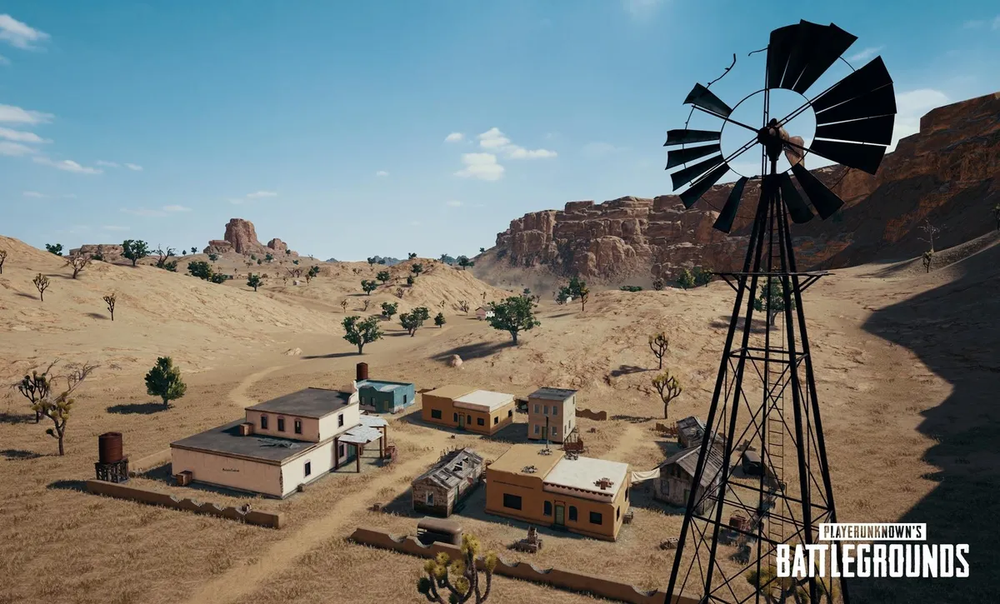
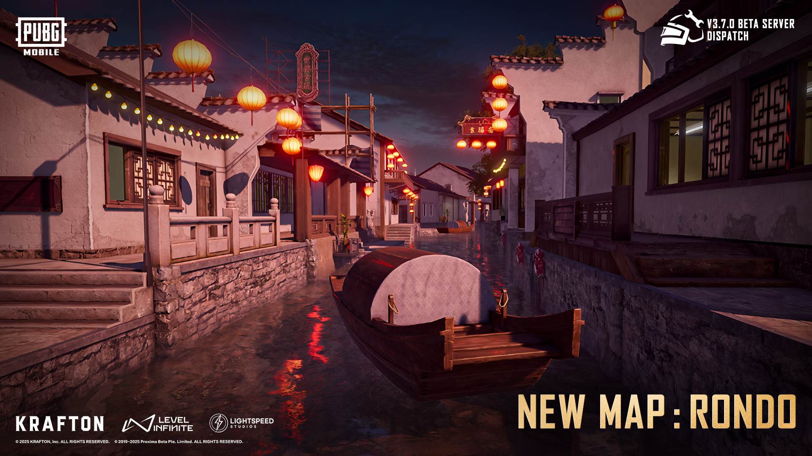
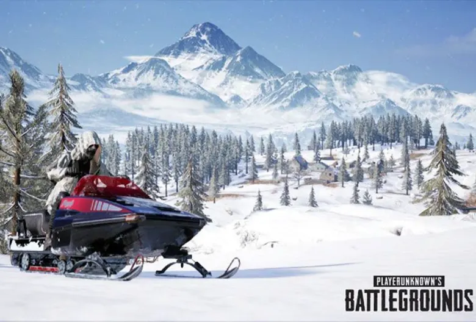

SquadSync
☼
☾
Battle Cards
Maps
Weapons
Characters
Featured Battle Maps

Desert Storm
Environment: Arid / Open Combat

Urban Strike
Environment: City / Close Combat

Frostbite Arena
Environment: Snow / Survival